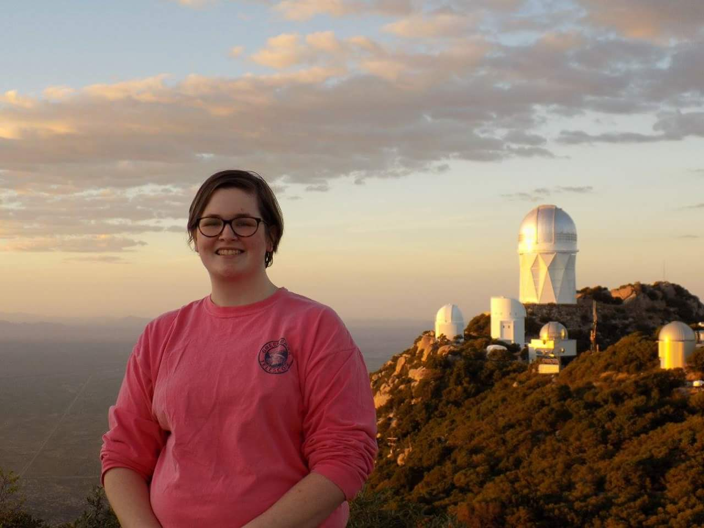
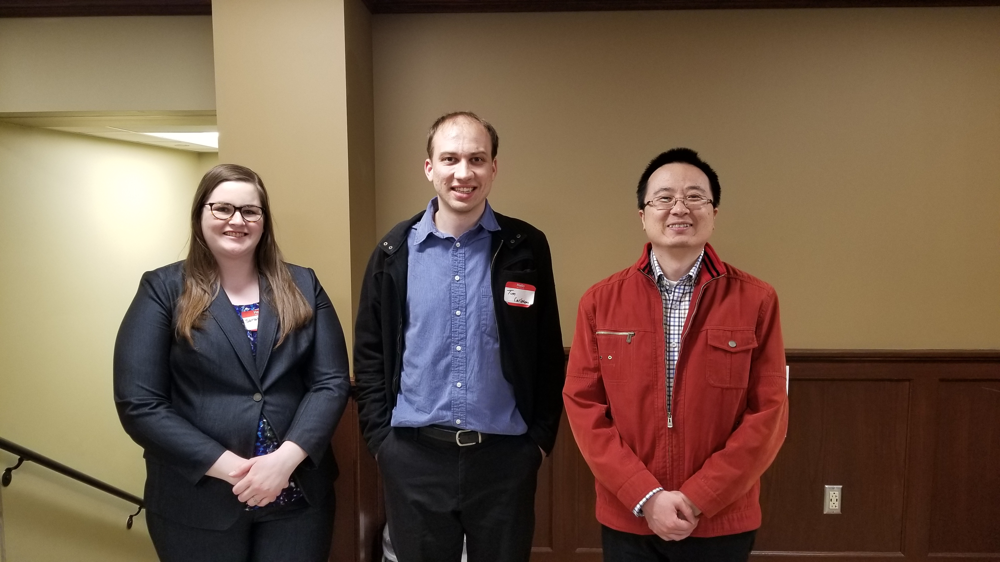
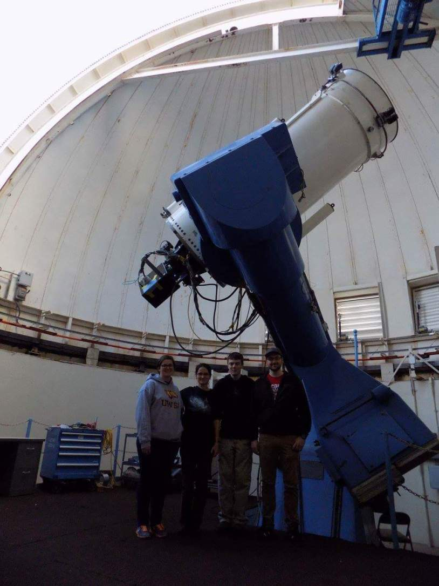
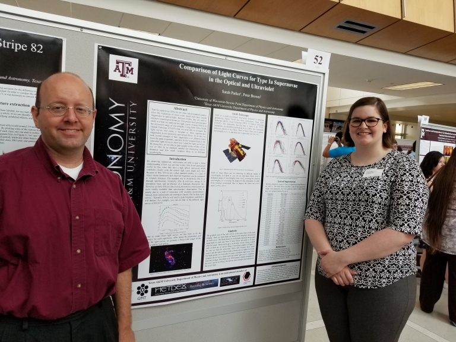
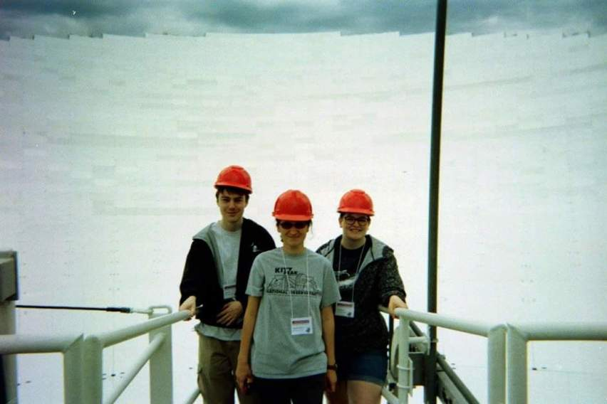
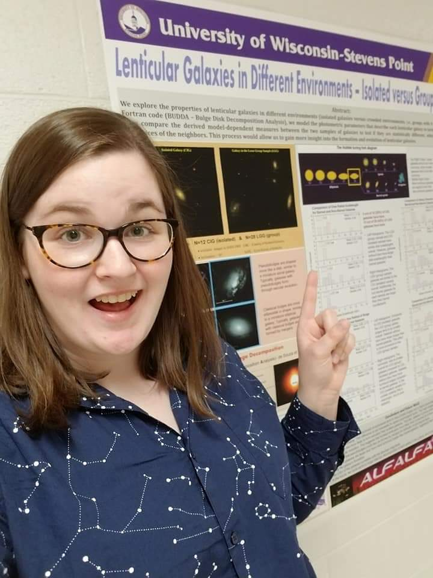

About Me

Education:
M.S. in Physics and Astronomy at University of Missouri,
B.S. in Physics at University of Wisconsin - Stevens Point
Research Interests:
Extragalactic astronomy

Sarah Parker graduated with a M.S. in Physics and Astronomy at the University of Missouri.
Sarah’s research was in the field of extragalactic astronomy.

Before recieving her M.S. at Mizzou, Sarah graduated from the University of Wisconsin-Stevens Point
with a B.S. in Physics in 2018. There, she did research on the environmental effects on elliptical
and lenticular galaxies with Dr. Adriana Durbala.

During the summer of 2017, Sarah was a research student with Dr. Peter Brown at Texas A&M. There,
she worked in python to create a template for the light curves of type Ia supernovae.

Sarah has been on three observing runs to Kitt Peak National Observatory, where she used the 0.9 m
WIYN telescope. She has also been on one observing run to McDonald Observatory, where she had access
to the 0.8 m and 0.9 m telescopes. Sarah has also attended an ALFALFA undergraduate workshop at Green
Bank Observatory.
Research

NOTE: Sarah does not currently have any publications in peer-reviewed journals, but
hopes to publish in the relatively near future. For now, please enjoy her research posters:
Lenticular Galaxies in Different Environments - Isolated versus Group Environment
Comparison of Light Curves for Type Ia Supernovae in the Optical and Ultraviolet
Elliptical Galaxies in Different Environments - Isolated versus Group Environment
Contact
Email: smpmfg@missouri.mail.edu
Blog
July 06, 2021
Blog #1: Welcome to My Professional Blog
Hi there! My name is Sarah. Welcome to my blog!
Here is some background on me: I have two degrees in physics, with a research background in astronomy.
I am extremely passionate about space, science, and education. After graduating with my M.S. in Physics
and Astronomy during the COVID-19 pandemic, I was hard pressed to find a job in my field. In this time,
I reflected on my past experiences, and thought of a plan to move forward. During my career I had been a
tutor, teaching assistant, and planetarium lecturer. It became clear to me that not only was I passionate
about physics and astronomy, but about education too! I had done it informally for the better part of a
decade. So, I did what any sane (and completely non-masochistic) person would do and enroll in college
again for the third time—this time at the University of Wisconsin-Milwaukee (UWM).
This time around, I am enrolled in the MACSTEP Program at UWM to get my teaching certification in Physics,
as well as a Master’s in Curriculum & Instruction. Starting in fall of 2021, I will be teaching physics and
precalculus at a high school in Milwaukee. In this year, I hope to learn how to be the best teacher I
possibly can be, and to be a positive influence in the lives of my students.
One of my favorite physics websites is PhET by the University of Colorado
Boulder. They have simulations for many different physics concepts, which will be a great tool to help my
students visualize these phenomena. I look forward to incorporating it into my classroom!
July 10, 2021
Blog #2: Where I am and Where I want to Go